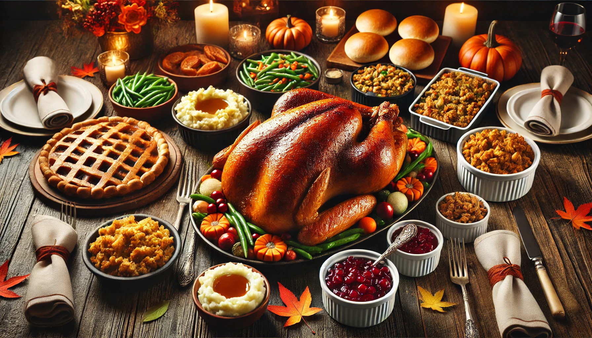
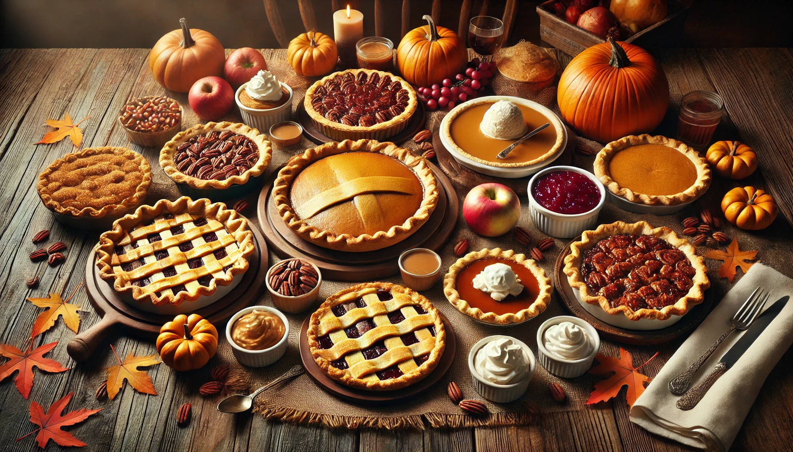

THANKSGIVING DAY
A gratidão é uma emoção ou atitude de reconhecimento e apreciação por algo que
recebemos ou experimentamos,
seja de outras pessoas, da vida ou do universo. Ela envolve o reconhecimento de algo que nos beneficia,
seja em forma de gestos, apoio, recursos ou experiências positivas.
A gratidão não se limita apenas a receber algo, mas também a reconhecer o valor daquilo e,
muitas vezes, a retribuir de alguma forma.
A gratidão pode ser vista como um estado de conscientização e
valorização do que temos,
e não apenas do que nos falta. Quando praticada de forma constante, ela pode contribuir para o
bem-estar emocional, a paz interior e a melhoria dos relacionamentos. Além disso, está associada
a um sentimento de humildade, pois reconhecemos que não somos completamente
autossuficientes e
que há uma interdependência entre nós e os outros, bem como com o mundo ao nosso redor.
Em resumo, a gratidão é um reconhecimento positivo das coisas boas que temos e um
valor emocional
que fortalece nossa conexão com o mundo, promovendo uma sensação de felicidade e contentamento.


Gratitude is an emotion or attitude of recognition and appreciation for something we
receive or experience,
whether from other people, life, or the universe. It involves acknowledging something that benefits us,
whether in the form of gestures, support, resources, or positive experiences.
Gratitude is not limited to merely receiving something but also recognizing its value and, often,
reciprocating in some way.
Gratitude can be seen as a state of awareness and appreciation for
what
we have, rather than focusing solely on what we lack. When practiced consistently, it can contribute to
emotional well-being, inner peace, and improved relationships. Moreover, it is associated with a sense
of
humility, as we recognize that we are not entirely self-sufficient and that there is an
interdependence
between ourselves and others, as well as with the world around us.
In summary, gratitude is a positive acknowledgment of the good things we have and an
emotional value that strengthens our connection to the world, promoting a sense of
happiness and contentment.